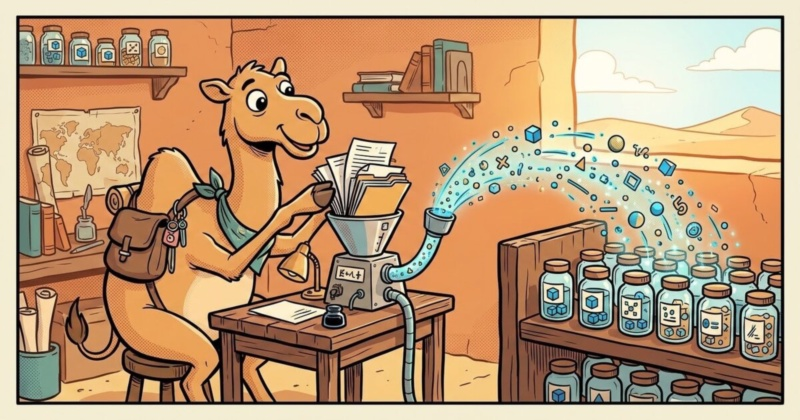

Camel 4.23 can turn a folder of documents into a knowledge base for retrieval-augmented generation (RAG). The new camel-langchain4j-ingest component splits a message body, embeds the segments and writes them to a LangChain4j EmbeddingStore. Four new Kamelets in camel-kamelets 4.23 add the rest of the pipeline: a directory source, two parsers and a sink.
All of it runs from the Java DSL, the YAML DSL and Camel Main. Camel JBang runs it too, once you define the store and the model as beans in a small Java file (how to define beans). Camel Quarkus declares a pipeline in a few properties: text only in 3.x, all of it in 4.0.0 (not released yet).
This post covers the component, the Kamelets and the Camel Quarkus extension.
The Problem: Ingestion Is Plumbing
A RAG application is only as good as what is in its store. Filling the store is the part every project writes again: read the files, get the text out, split it, embed it, store it, and don’t do it all again on the next poll.
Three things make it harder than it looks:
- Formats. Knowledge lives in PDFs, office files, images, audio and video, not plain text.
- Repetition. Every poll lists the whole folder, so the source keeps a list of the files it has already read and skips them (the register). Without it, a running route embeds the whole directory again and again.
- Hygiene. Drafts, confidential files and oversized uploads should never reach the store.
The Solution: langchain4j-ingest
The langchain4j-ingest component is a producer. It takes the message body, splits it into overlapping segments, embeds them in batches and writes them to the store. Any Camel consumer can feed it, and an optional parser goes in front:
┌──────────────────┐ ┌──────────────────┐ ┌──────────────────────┐
│ source │ │ parser │ │ langchain4j-ingest │
│ file, S3, Kafka, │───▶│ (optional) │───▶│ filter · split │
│ any consumer │ │ Tika | Docling │ │ embed · store │
└──────────────────┘ └──────────────────┘ └──────────────────────┘Retrieval is served by the langchain4j-embeddingstore component or any LangChain4j retriever over the same store.
Text is not the only input. With modality=media the component embeds an image, an audio clip, a video or a PDF whole, as one vector, using a multimodal embedding model, so a folder of photos is retrievable like a folder of documents (see below). Several LangChain4j providers embed images today; audio needs a model of your own.
A Folder in One Route
from("file:/var/data/product-docs?noop=true&recursive=true&readLock=changed&charset=UTF-8")
.to("langchain4j-ingest:products?documentIdHeader=CamelFileName");That is a complete pipeline. By default, segments are 500 characters with a 50 character overlap, embedded in batches of 32. noop=true leaves the files in place, because a knowledge base reads its source, and makes the file consumer remember what it has read. readLock=changed waits for a file that is still being copied.
Two limits. The route reads files as UTF-8 text, so a PDF fails on every poll or lands in the store as raw PDF syntax. Limit it with antInclude=**/*.md,**/*.txt, or parse first with the Kamelets below. And its register holds only 1000 files: in a bigger folder, every file is embedded again on every poll, unless you give the file endpoint a sized idempotentRepository (see Good to Know).
embeddingStore and embeddingModel are autowired when the registry holds exactly one bean of each type. Otherwise name the bean: embeddingStore=#bean:name. On Camel Main, camel.beans.* binds a pair that needs no API key (add dev.langchain4j:langchain4j-embeddings-all-minilm-l6-v2):
camel.beans.store=#class:dev.langchain4j.store.embedding.inmemory.InMemoryEmbeddingStore
camel.beans.model=#class:dev.langchain4j.model.embedding.onnx.allminilml6v2.AllMiniLmL6V2EmbeddingModelEvery segment carries camel_ingest_pipeline and camel_ingest_document_id metadata, so an answer can cite its document. The message body becomes an IngestResult whose outcome is ingested, empty, skipped or filtered.
Any Consumer as the Source
The document id lives wherever the consumer puts it. documentIdHeader names it:
from("aws2-s3://product-docs?region=eu-west-1&deleteAfterRead=false")
.to("langchain4j-ingest:s3docs?documentIdHeader=CamelAwsS3Key");Mind each consumer’s defaults: aws2-s3 deletes objects after reading them unless deleteAfterRead=false. For sources that redeliver, such as Kafka, add idempotentRepository=#bean:register. A duplicate id is answered skipped, and the first write wins, so an updated document with the same id is skipped too: a Kafka topic of updates never updates the store.
Filters and Size Limits
from("file:knowledge-base?noop=true")
.to("langchain4j-ingest:docs?documentIdHeader=CamelFileName"
+ "&includeId=**/*.md,**/*.txt&excludeId=**/draft-*&minDocumentSize=100");includeId and excludeId take comma-separated Ant-style patterns for the document id. Exclusion wins. They run before the body is read, so a rejected document costs nothing. minDocumentSize drops documents too short to be useful, and documentFilter=#bean:name takes any Predicate. All of them answer filtered.
maxDocumentSize is a limit, not a filter. The pipeline holds a document in memory whole, so an oversized one fails the exchange. Set it when the source can deliver large payloads.
Images, and Other Media with Your Own Model
Not everything should become text. With modality=media the body is read as bytes and embedded whole, as one vector, by a multimodal embedding model:
from("file:/var/data/photos?noop=true&recursive=true&readLock=changed&antInclude=**/*.jpg,**/*.png")
.to("langchain4j-ingest:photos?modality=media&documentIdHeader=CamelFileName");The MIME type comes from the file extension, or from contentType. The model must list that medium in supportedContentTypes(), and a text-only model fails the start. The vector is stored with a placeholder segment whose text is the document id, so retrieval cites it like any other.
Several LangChain4j providers embed images. As of LangChain4j 1.21 none embeds audio out of the box, so that takes an EmbeddingModel of your own. Video and PDF need a model that declares them as well.
Kamelets: The Same Pipeline, Declared
Parsing is the fiddly part. A parser copies document metadata over the message headers, so a route has to capture the document id before the parse, or a crafted document could forge its own. camel-kamelets 4.23 ships parsers that do it for you, with a directory source and a sink to match:
langchain4j-ingest-file-sourcewatches a directory. Files stay in place, unchanged files are remembered, and a file still being copied is waited for.tika-extract-text-actionextracts plain text in-process. Each format needs its Tika parser module, such astika-parser-pdf-module.docling-convert-actionconverts documents to structure-preserving markdown with Docling, OCR included. It uses a local CLI or a Docling Serve instance.langchain4j-ingest-sinkwraps the component and takes its ingest options, such asincludeIdandmodality.
A folder of PDFs in the YAML DSL:
- route:
from:
uri: kamelet:langchain4j-ingest-file-source
parameters:
directory: /var/data/reports
steps:
- to:
uri: kamelet:tika-extract-text-action
- to:
uri: kamelet:langchain4j-ingest-sink
parameters:
pipelineName: reportsFilters and media are sink parameters (includeId, modality: media). include and exclude on the source narrow the files before they are read. To parse with Docling Serve instead, swap the Tika step:
- to:
uri: kamelet:docling-convert-action
parameters:
useDoclingServe: true
doclingServeUrl: http://docling-serve:5001Run It Anywhere
Camel JBang resolves the Kamelets’ dependencies, but you bind the store and the model yourself. Save the PDF route above as ingest.camel.yaml and add a Beans.java:
import dev.langchain4j.model.embedding.onnx.allminilml6v2.AllMiniLmL6V2EmbeddingModel;
import dev.langchain4j.store.embedding.inmemory.InMemoryEmbeddingStore;
import org.apache.camel.BindToRegistry;
import org.apache.camel.Configuration;
@Configuration
public class Beans {
@BindToRegistry
public InMemoryEmbeddingStore<?> store() {
return new InMemoryEmbeddingStore<>();
}
@BindToRegistry
public AllMiniLmL6V2EmbeddingModel model() {
// JBang's context class loader cannot see the --dep jar that holds the model file
Thread.currentThread().setContextClassLoader(AllMiniLmL6V2EmbeddingModel.class.getClassLoader());
return new AllMiniLmL6V2EmbeddingModel();
}
}To see a result, add ask.camel.yaml, a route that asks the store one question ten seconds after the start:
- route:
from:
uri: timer:ask?delay=10000&repeatCount=1
steps:
- setBody:
expression:
constant:
expression: How much did revenue grow?
- to:
uri: langchain4j-embeddingstore:reports?action=SEARCH&maxResults=1
- split:
expression:
simple:
expression: "${body}"
steps:
- log:
message: "${body.embedded.text} (${body.embedded.metadata.getString('camel_ingest_document_id')})"Install Camel JBang or the Camel CLI Launcher. Either gives you the camel command:
-
Camel JBang (JBang asks you to trust github.com/apache/camel):
jbang app install --force --fresh -Dcamel.jbang.version=4.23.0 -Dcamel-kamelets.version=4.23.0 camel@apache/camel -
The Camel CLI Launcher, which needs a JDK 17+:
curl -fsSL https://camel.apache.org/install.sh | sh -s -- --version 4.23.0
Both run the three files with the same command, which adds the PDF module and the model (it runs in-process, no API key):
camel run ingest.camel.yaml ask.camel.yaml Beans.java --kamelets-version=4.23.0 \
--dep=org.apache.tika:tika-parser-pdf-module:4.1.0,dev.langchain4j:langchain4j-embeddings-all-minilm-l6-v2:1.21.0-beta31The installs pin 4.23.0 because Camel JBang defaults to the 4.22 LTS, and the launcher runs only the version it was installed with (it rejects --camel-version). The launcher bundles the 4.22 Kamelets, hence --kamelets-version=4.23.0.
For a q3-report.pdf in /var/data/reports, the log shows the matching passage and the document it came from:
Revenue grew twelve percent in the third quarter, while support tickets fell by a third. (q3-report.pdf)On Camel Main, add camel-langchain4j-ingest, camel-yaml-dsl, camel-kamelet, camel-file, camel-tika, tika-parser-pdf-module and org.apache.camel.kamelets:camel-kamelets.
Good to Know
-
No record. The pipeline keeps no record of what it wrote. A document removed from the source stays in the store, and a document ingested again lands on top of its old segments.
-
Registers. The Kamelet source remembers a file by path, modification time and size, so an edited file is read again. A plain
fileendpoint withnoop=trueremembers it by path only, so an edit is ignored. The register lives in memory and holds 1000 entries. After a restart it is empty and the whole folder is ingested again. In a folder of more than 1000 files the oldest entries fall out, so files come back on every poll. For a real knowledge base give the source a persistent register with room for the folder, and a store that persists as well: with theInMemoryEmbeddingStoreof the examples a restart leaves the store empty while the register skips every file. On Camel Main or Camel JBang (application.properties), define it as a bean.cacheSizeis the room:camel.beans.register=#class:org.apache.camel.support.processor.idempotent.FileIdempotentRepository camel.beans.register.fileStore=#class:java.io.File('/var/data/ingest/register.dat') camel.beans.register.cacheSize=100000Name it on the Kamelet source:
parameters: directory: /var/data/reports idempotentRepository: "#bean:register"A plain consumer takes it in the URI:
file:/var/data/product-docs?noop=true&idempotentRepository=#bean:register. -
Failures. A failing file on a directory source is retried on every poll.
-
Support level. The component and the Kamelets are Preview.
Camel Quarkus 3.x
The camel-quarkus-langchain4j-ingest extension is experimental and has been part of Camel Quarkus since 3.39.0. In 3.x it ingests text with an engine of its own. A directory pipeline reads each file as UTF-8 text, so a PDF has to be converted first. A pipeline is a handful of properties:
quarkus.camel.langchain4j.ingest.reports.source.directory=/var/data/reports
quarkus.camel.langchain4j.ingest.reports.embedding-store=reports
quarkus.camel.langchain4j.ingest.reports.embedding-model=my-modelembedding-store and embedding-model name CDI beans by their @Named value. Leave them out when the application has exactly one of each. Segment size and overlap are properties too.
Any other consumer feeds a pipeline with source.uri and source.document-id, or in Java with @Ingest and the Endpoint DSL:
quarkus.camel.langchain4j.ingest.s3docs.source.uri=aws2-s3://product-docs?region=eu-west-1&deleteAfterRead=false
quarkus.camel.langchain4j.ingest.s3docs.source.document-id=CamelAwsS3Key@Ingest("events")
IngestPipeline events() {
return IngestPipeline.from(Source.endpoint(dsl -> dsl.kafka("ingest-events").groupId("ingest"))
.documentId("CamelKafkaKey"))
.embeddingStore("events");
}Segments carry the metadata keys of the component, camel_ingest_pipeline and camel_ingest_document_id, since 3.40.0 (3.39.0 writes camel_quarkus_pipeline and camel_quarkus_document_id). The extension sizes the file register at 100,000 keys. It lives in memory, so a restart ingests the folder once more. Since 3.40.0, source.idempotent-repository names a persistent one.
The extension supports native mode, and CI runs its integration tests against the native executable. Since 3.40.0 it registers the IdempotentRepository classes it finds for reflection, so a #class: register works too.
The langchain4j-ingest-rag example, pinned to 3.40.0, shows a properties-only pipeline feeding a RAG assistant.
Camel Quarkus 4.x
In Camel Quarkus 4.0.0, which is not released yet, the extension drives the component and composes each pipeline from the Kamelets. The 3.x properties and @Ingest stay. Batch size, max-document-size and a document-splitter bean are new properties. Still no route, no ingestion code. The full options are in the extension reference.
A pipeline named reports runs as the route langchain4j-ingest-reports plus one route per Kamelet it uses, suffixed -source, -parser and -sink. To pause a directory pipeline, stop its -source route.
Parsers
One property adds a parser to the reports pipeline above:
quarkus.camel.langchain4j.ingest.reports.parser=tikaparser is tika or docling. Tika needs camel-quarkus-tika and a parser module such as tika-parser-pdf-module. Docling needs camel-quarkus-docling, camel.component.docling.use-docling-serve=true and camel.component.docling.docling-serve-url. A missing parser extension fails the build and names the artifact.
Filters and Media
The component’s filters and media modality are also available as properties:
quarkus.camel.langchain4j.ingest.products.filter.include-id=**/*.pdf,**/*.md
quarkus.camel.langchain4j.ingest.products.filter.exclude-id=**/draft-*
quarkus.camel.langchain4j.ingest.products.filter.min-document-size=100
quarkus.camel.langchain4j.ingest.photos.source.directory=/var/data/photos
quarkus.camel.langchain4j.ingest.photos.modality=media
quarkus.camel.langchain4j.ingest.photos.embedding-model=my-multimodal-model
quarkus.camel.langchain4j.ingest.photos.filter.include-id=**/*.png,**/*.jpgfilter.document-filter names a Predicate bean and content-type sets the MIME type. Media cannot be combined with parser or document-splitter. With a parser, the id patterns run before the parse, so an excluded document never reaches Tika or Docling Serve.
Native Mode
The Kamelets the pipelines use are always embedded in the native executable, even if quarkus.camel.kamelet.identifiers is narrowed. Tika’s HTML, plain text and PDF modules work in native mode.
Try It Yourself
A runnable example is in the camel-langchain4j-ingest-demo repository. Clone it and run ./run.sh. It needs Java 21+ and JBang, and runs fully local, with no API key and no Docker.
Use It in Your Project
The component and the Kamelets ship in Apache Camel 4.23 and camel-kamelets 4.23.0.
- Add
camel-langchain4j-ingestand bind anEmbeddingModeland anEmbeddingStorein the registry. - Write the route in the DSL you prefer, with the Tika or Docling Kamelet if you parse.
- On Quarkus, add
camel-quarkus-langchain4j-ingestand declare the pipeline inapplication.properties. Camel Quarkus 3.x ingests text, and 4.0.0 (not released yet) adds parsers, filters and media.
Your documents are now a knowledge base. Declare the pipeline, drop in the files.